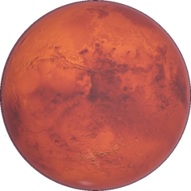
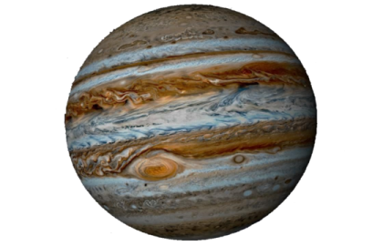
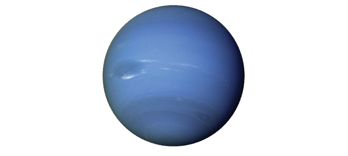

Merkúr
Merkúr je najbližšia planéta slnečnej sústavy k Slnku a najmenšia planéta slnečnej sústavy.
Merkúr je malá kamenná planéta s povrchom posiatym impaktnými krátermi. Nemá hustú atmosféru, ktorá by dokázala regulovať povrchovú teplotu. Z toho dôvodu jej rozdiel kolíše v rozmedzí +440 °C počas dňa a −180 °C v noci. Napriek tomu, že je Merkúr najbližšie k Slnku, nedrží teplotný rekord medzi planétami slnečnej sústavy. Ten patrí Venuši, ktorá je od Slnka síce ďalej, ale panuje na nej silný skleníkový efekt.
Jeho priemer je 38 % priemeru Zeme, čo je 1,4-krát viac ako priemer Mesiaca.[2] Merkúr má vysokú hustotu a slabé, no predsa prítomné magnetické pole. Vytvára ho masívne kovové jadro vo vnútri planéty. Merkúr obieha okolo Slnka najrýchlejšie zo všetkých planét, no jeho rotácia je, naopak, veľmi pomalá. Nemá žiadny mesiac.
Pre svoj najrýchlejší pohyb po oblohe zo všetkých planét bol Rimanmi pomenovaný podľa posla bohov Merkúra.[3] Planéta je známa už od staroveku, hoci sa voľným okom ťažšie pozoruje. Keďže sa jeho dráha nachádza vo vnútri dráhy Zeme, nikdy sa na oblohe nevzdiali od Slnka o viac ako 28°, a preto ho možno pozorovať len ráno, krátko pred východom, alebo večer, krátko po západe Slnka. Aj tak môže byť niekedy pomerne nápadným objektom na večernej alebo rannej oblohe.
Venuša
Venuša je druhá planéta slnečnej sústavy (v poradí od Slnka), po Slnku a po Mesiaci najjasnejší objekt viditeľný zo Zeme.
Pomenovaná je po starorímskej bohyni lásky. Jej obežná dráha sa nachádza vnútri dráhy Zeme, to znamená, že nikdy sa na oblohe nevzdiali ďaleko od Slnka. Maximálna uhlová vzdialenosť Venuše od Slnka môže byť až 48 °. So Slnkom a Mesiacom patrí medzi jediné tri nebeské telesá, ktorých svetlo vrhá na Zem tiene viditeľné voľným okom. Je pomenovaná po rímskej bohyni Venuši. Je to terestriálna planéta, čo do veľkosti a skladby veľmi podobná Zemi; niekedy ju preto nazývame „sesterskou planétou“ Zeme. Aj keď orbity všetkých ostatných planét sú elipsovité, orbita Venuše je jediná takmer kružnica, so stredom Slnka iba o 0,7 % mimo skutočný stred Venušinej obežnej dráhy. Planéta je obklopená veľmi hustou atmosférou, ktorá na jej povrchu udržuje najvyššie teploty spomedzi všetkých planét v slnečnej sústave.
Pretože je Venuša k Slnku bližšie ako Zem, nájdeme ju na oblohe takmer vždy blízko pri Slnku, takže ju je možné zo Zeme vidieť iba ráno pred východom Slnka alebo večer po západe Slnka. Preto je niekedy označovaná ako „Zornička“ alebo „Večernica“, a keď sa objaví, ide o zďaleka najsilnejší bodový zdroj svetla na oblohe. Výnimočne možno Venušu voľným okom uvidieť aj vo dne.
Venuša bola známa už starým Babylončanom okolo 1600 pred Kr. a pravdepodobne bola známa dlho predtým v prehistorických dobách vďaka svojej jasnej viditeľnosti. Jej symbolom je štylizované znázornenie bohyne Venuše držiacej zrkadlo: kruh s malým krížom pod ním (Venus symbol.svg v Unicode: 2640). Tento symbol sa používa v biológii na označenie jedincov ženského pohlavia.
Zem
Zem je v poradí tretia planéta slnečnej sústavy. Je to zároveň jediná planéta, na ktorej je podľa súčasných vedeckých poznatkov voda v kvapalnom skupenstve a život. Zem je predmetom skúmania napríklad kozmogónie, geológie, paleontológie či geografie.
V strede Zeme sa nachádza horúce husté jadro, ktoré obklopuje chladnejší plášť z roztavených hornín. Na povrchu je kôra, ktorá dosahuje rôznu hrúbku v závislosti od miesta (pod oceánmi je všeobecne tenšia ako pod kontinentmi). Vďaka pevnému povrchu a vnútornému zloženiu Zem zaraďujeme medzi terestriálne planéty. Zem je najväčšia spomedzi terestriálnych planét slnečnej sústavy a tiež jediná známa planéta, na ktorej sa nachádza voda vo všetkých troch skupenstvách. Väčšina jej povrchu je pokrytá kvapalným oceánom, čo jej pri pohľade zo vzdialeného vesmíru dáva charakteristickú modrú farbu. V blízkosti rotačných pólov je oceán, resp. pevný povrch trvale zamrznutý a vytvára biele polárne čiapky. Zem je obklopená atmosférou, ktorá vo veľkých vzdialenostiach od povrchu pozvoľna prechádza do medziplanetárneho prostredia. Po prvýkrát Zem ako celok na vlastné oči videla posádka kozmickej lode Apollo 8, ktorá ako prvá opustila obežnú dráhu Zeme a vzdialila sa od nej natoľko, že sa zmestila do zorného poľa ľudského oka.
Astronomický symbol Zeme je kríž vnútri kruhu Earth symbol.svg. Jej grécke meno Gaia znamená matka. Gaia bola v staroveku veľmi uctievanou bohyňou Zeme, ktorej zasväcovali množstvo chrámov a oltárov. Gaia dávala život všetkým tvorom, ale neľútostne ho potom brala späť do svojho lona. Bola teda zároveň bohyňou života a smrti.
Zem vznikla približne pred 4,57 miliardami rokov pravdepodobne sformovaním sa z protoplanetárneho disku. Povrch Zeme neustále pretvárajú geologické procesy, napríklad platňová tektonika, ktorá pomaly mení polohy a tvar kontinentov. Veľkú zásluhu na dnešnej podobe Zeme majú aj živé organizmy, ktoré utvárajú biosféru. Počas dlhých miliárd rokov na Zemi vytvorili dýchateľnú atmosféru a pôdu.
Zem je prvá planéta od Slnka, ktorú sprevádza prirodzená družica (Mesiac) a zároveň jediná planéta slnečnej sústavy, ktorá má mesiac len jeden. Jeho priemer dosahuje približne štvrtinu priemeru Zeme, ale považuje sa za neprimerane veľký vzhľadom na materské teleso. Mesiac sa len v máločom podobá na planétu, ktorú obieha. Jeho povrch je pustý, bez atmosféry, kvapalnej vody a sopečnej aktivity.

Mars
Mars je štvrtá planéta slnečnej sústavy v poradí od Slnka. Je to druhá najmenšia planéta (po Merkúre). Pomenovaná je po Marsovi, starorímskom bohovi vojny. Jeho dráha sa nachádza až za dráhou Zeme. Ide o planétu terestrického typu, to znamená, že má pevný horninový povrch pokrytý impaktnými krátermi, vysokými sopkami, hlbokými kaňonmi a ďalšími útvarmi. Obiehajú ho dva mesiace nepravidelného tvaru pomenované Fobos a Deimos.
V období, keď je Mars v opozícii (nachádza sa na opačnej strane oblohy ako Slnko), je viditeľný na oblohe po celú noc. Prvé písomné záznamy o planéte a jej pozorovaní pochádzajú z obdobia prvých civilizácií. Všetky veľké staroveké civilizácie, Egypťania, Babylončania a Gréci, vedeli o tejto „putujúcej hviezde“ a dávali jej svoje pomenovania. Považovali ju za symbol ohňa a krvi, pretože horniny, pôda a obloha na planéte majú červený, alebo ružový odtieň. Nazývali ju „Červený objekt“, „Nebeský oheň“, „Hviezda smrti“ alebo „Boh vojny“.[2]
Takmer 20 úspešných kozmických sond od 60. rokov 20. storočia umožnilo detailné skúmanie planéty. V súčasnosti (2014) sú na obežnej dráhe Marsu tri funkčné sondy (Mars Odyssey, Mars Express a Mars Reconnaissance Orbiter) a na povrchu planéty sa pohybujú dve vozidlá misie: Opportunity a Curiosity,[3] ktoré poskytujú údaje, umožňujúce mapovať väčšiu časť povrchu, definovať základné historické obdobia, či porozumieť základným javom odohrávajúcim sa na planéte. K planéte mieri aj „Mars Orbiter Mission“ z Indickej vesmírnej výskumnej organizácie (ISRO), vypustenej 5. novembra 2013. Pokiaľ bude úspešná, stane sa štvrtou agentúrou po Sovietskom vesmírnom programe, NASA a ESA, ktorá dosiahne Mars.[4]28. septembra 2015 bola potvrdená existencia tekutej vody na Marse.

Jupitér
Jupiter je piata planéta v poradí od Slnka, najväčšia a najhmotnejšia planéta našej slnečnej sústavy. Je pomenovaný po rímskom bohovi Jupiterovi. Symbolom planéty je štylizované znázornenie Jupiterovho božského blesku (v Unicode: ♃).
Jupiter má chemické zloženie podobné Slnku a ďalším hviezdam. Líši sa od nich najmä nízkou hmotnosťou, ktorá nestačí na vytvorenie podmienok pre termojadrové reakcie prebiehajúce vo všetkých hviezdach hlavnej postupnosti. Neexistuje presná definícia odlišujúca veľké hmotné planéty ako Jupiter od hnedých trpaslíkov, čo sú prechodné útvary medzi planétami a hviezdami. V každom prípade by Jupiter potreboval byť aspoň 80× hmotnejší, aby sa mohol stať hviezdou.[2] Planéty, ktoré sú Jupiteru podobné hmotnosťou, rozmermi a zložením, sa nazývajú joviálne.
Jupiter je prvou planétou od Slnka, ktorá nemá pevný povrch. Jeho búrlivá atmosféra plynule prechádza do plášťa a vo väčších hĺbkach do horúceho jadra. Rotácia planéty spôsobila, že sa v jej atmosfére utvorili gigantické, farebne jasne odlíšené štruktúry nazývané pásy a zóny. Okrem nich možno už malým ďalekohľadom pozorovať na Jupiteri ďalšie búrkové štruktúry, napríklad známu Veľkú červenú škvrnu, ktorá je z nich najväčšia.
Jupiter sa okolo svojej osi otočí najrýchlejšie zo všetkých planét slnečnej sústavy – otočenie netrvá ani 10 hodín. Planéta má podľa súčasných poznatkov najväčšiu sústavu mesiacov. Zo 67 jeho doteraz objavených družíc[1][3] sú najznámejšie štyri najväčšie. Sú nazývané tiež Galileove mesiace, pretože prvý písomný záznam o ich pozorovaní urobil Galileo Galilei v roku 1610. Najväčší Galileiho mesiac, Ganymedes, je zároveň najväčším mesiacom v slnečnej sústave. Ďalšie známe mesiace sú Európa, ktorá je pokrytá ľadovou kôrou a Io, ktorý prejavuje mohutnú sopečnú aktivitu.
Jupiter je na oblohe dobre viditeľný voľným okom, a preto bol známy ľuďom už v staroveku. Vďaka svojej obežnej dobe okolo Slnka trvajúcej necelých 12 rokov prechádza Jupiter každým znamením zvieratníka približne rok. Veľa údajov o Jupiteri nám poskytli kozmické sondy, najmä jeho dve umelé družice: sonda Galileo v rokoch 1995 – 2003 a Juno od roku 2016.
Saturn
Saturn je šiesta planéta Slnečnej sústavy v poradí od Slnka, po Jupiteri druhá najväčšia z planét. Je známa i z prehistorického obdobia. Pomenovaný bol podľa rímskeho boha Saturna, ktorý je obdobou gréckeho Krona. Astronomický symbol pre Saturn je ♄.
Saturn patrí medzi joviálne planéty, to znamená, že nemá pevný povrch, ale len hustú atmosféru, ktorá postupne prechádza do plášťa. Atmosféra je tvorená prevažne vodíkom, ktorý tvorí 96,3 % jej objemu. Viditeľný povrch planéty tvorí svetložltá vrstva mrakov s nejasnými pásmi rôznych odtieňov, ktoré sú rovnobežné s rovníkom. Teplota v hornej oblačnej vrstve dosahuje −140 °C. Hmotnosť planéty je približne 95-krát väčšia ako hmotnosť Zeme[2], má však zo všetkých planét najmenšiu hustotu: len 0,6873 g/cm³ a ako jediná planéta v slnečnej sústave je ľahší než voda. Saturn je známy najmohutnejšou sústavou prstencov zo všetkých planét slnečnej sústavy. Jeho hlavné prstence, ktoré sú označené veľkými písmenami možno pozorovať zo Zeme už aj malým ďalekohľadom. Okolo planéty obieha tiež početná rodina mesiacov, z ktorých najväčší je Titan, jediný mesiac v slnečnej sústave s hustou atmosférou.
Jeden obeh Saturna okolo Slnka trvá 29,46 pozemského roka. Je ľahko pozorovateľný voľným okom ako žltý neblikajúci objekt jasnosťou porovnateľný s najjasnejšími hviezdami. Od ekliptiky sa nikdy nevzdiali na väčšiu uhlovú vzdialenosť ako 2,5°. Prechod jedným zvieratníkovým znamením mu trvá viac než dva roky.
Urán
Urán je siedma planéta od Slnka, tretia najväčšia a štvrtá najhmotnejšia planéta v slnečnej sústave. Patrí medzi plynné obry a spolu s Neptúnom aj medzi tzv. ľadové obry. Meno má po gréckom bohovi nebies Uránovi, čo je ojedinelé – ostatné planéty sú pomenované po rímskych bohoch. Symboly planéty Urán sú znak ♅ (používaný v astrológii) alebo Astronomický symbol Urána (používaný v astronómii). Je to najbližšia planéta k Zemi, ktorá nebola ľuďom známa už od staroveku. Aj napriek tomu, že Urán je možné za priaznivých podmienok pozorovať voľným okom na nočnej oblohe, antickí astronómovia ho kvôli pomalej rýchlosti a nízkej jasnosti nepovažovali za planétu, ale za hviezdu. Objav Urána ohlásil William Herschel 13. marca 1781, čím prvýkrát v modernej dobe posunul známe hranice slnečnej sústavy.
Chemickým zložením sa Urán podobá Neptúnu. Obe planéty majú rozdielne celkové zastúpenie prvkov oproti Jupiteru či Saturnu. Urán má podobné zloženie atmosféry ako Jupiter či Saturn. Tvoria ju prevažne plynné formy vodíka a hélia, ale obsahuje aj výrazný podiel vody, amoniaku a metánu so stopami ďalších uhľovodíkov. Atmosféra Uránu je najchladnejšou v slnečnej sústave, minimálne teploty sa pohybujú okolo 49 K. Jej štruktúra je vrstevnatá: v najnižších poschodiach sa nachádzajú mraky vody, vo vrchných poschodiach mraky tvorené hlavne metánom. Vnútro planéty je pravdepodobne zložené predovšetkým z ľadu a kamenia.
Podobne ako ďalšie plynné planéty má aj Urán prstence, magnetosféru a množstvo mesiacov. Zvláštnosťou Urána je sklon jeho rotačnej osi: os leží takmer v rovine, v ktorej planéta obieha. Severný a južný pól sa preto nachádzajú v oblastiach, ktoré sú u iných planét charakteristické pre rovník.[4] Pri pohľade zo Zeme sa preto občas stane, že sa prstence Urána javia ako terč s Uránom v strede.
Planétu skúmala zblízka iba sonda Voyager 2, ktorá okolo nej preletela v roku 1986. Sonda nespozorovala v atmosfére planéty žiadne väčšie množstvo mračien a búrkových systémov, ktoré sú typické pre iné plynné obry. Pozemské pozorovania priniesli náznaky sezónnych zmien počasia, s čím súvisia aj vetry vanúce v atmosfére. Tie môžu dosahovať rýchlosť až 900 km/h.

Neptún
Neptún je ôsma a najvzdialenejšia planéta slnečnej sústavy. Rozhodlo o tom hlasovanie na 26. kongrese Medzinárodnej astronomickej únie v Prahe 24. augusta 2006. Dovtedy bolo poslednou planétou slnečnej sústavy Pluto.
Planéta bola objavená 23. septembra 1846 Johannom Gallom a študentom astronómie Louisom Arrestom. Neptún je prvou planétou objavenou skôr na základe matematických výpočtov ako priamym pozorovaním. Astronómovia odvodili jeho existenciu z porúch v dráhe Urána.[8][9]
So svojím rovníkovým priemerom 49 528 km je štvrtou najväčšou planétou, jeho hmotnosť však z neho robí tretiu najhmotnejšiu planétu slnečnej sústavy. Neptún je 17-krát ťažší ako Zem a iba o niečo prekonáva svoju susednú planétu Urán (14-krát ťažší ako Zem). Planéta je pomenovaná podľa starorímskeho boha mora Neptúna.[10] Svojou stavbou, hmotnosťou a chemickým zložením sa zaraďuje k plynným obrom (joviálnym planétam).[8] Jeho astronomický symbol je trojzubec. (♆, Unicode U+2646)
Atmosféra Neptúna sa skladá najmä z vodíka a hélia, so stopami metánu, ktorý spôsobuje modrú farbu planéty. Toto zafarbenie je omnoho výraznejšie ako pri Uráne, ktorý má tiež podobné množstvo metánu, ale v atmosfére Neptúna sa nachádza pravdepodobne ešte neznáma zložka, ktorá toto zafarbenie zosilňuje. V atmosfére Neptúna tiež dujú najsilnejšie vetry z planét slnečnej sústavy, rýchlosťami približne 2 500 km/h.
Ako všetky plynné obry v slnečnej sústave, aj Neptún má prstence, ktoré sú však omnoho menej výrazné ako pri Saturne. Boli objavené tímom Edvarda Guinana, pričom ich objavitelia predpokladali, že prstence nie sú kompletné. Toto však vyvrátila sonda Voyager 2, ktorá okolo tejto planéty preletela. Neptún má tiež rodinu mesiacov, potvrdených ich je zatiaľ 13. Známy je najmä najväčší z nich, Triton, vďaka svojej retrográdnej obežnej dráhe, veľmi nízkej teplote na povrchu (38 K) a extrémne jemnej atmosfére (14 mikrobarov), zloženej z dusíka a metánu.
Neptún zblízka skúmala zatiaľ iba jediná sonda – Voyager 2